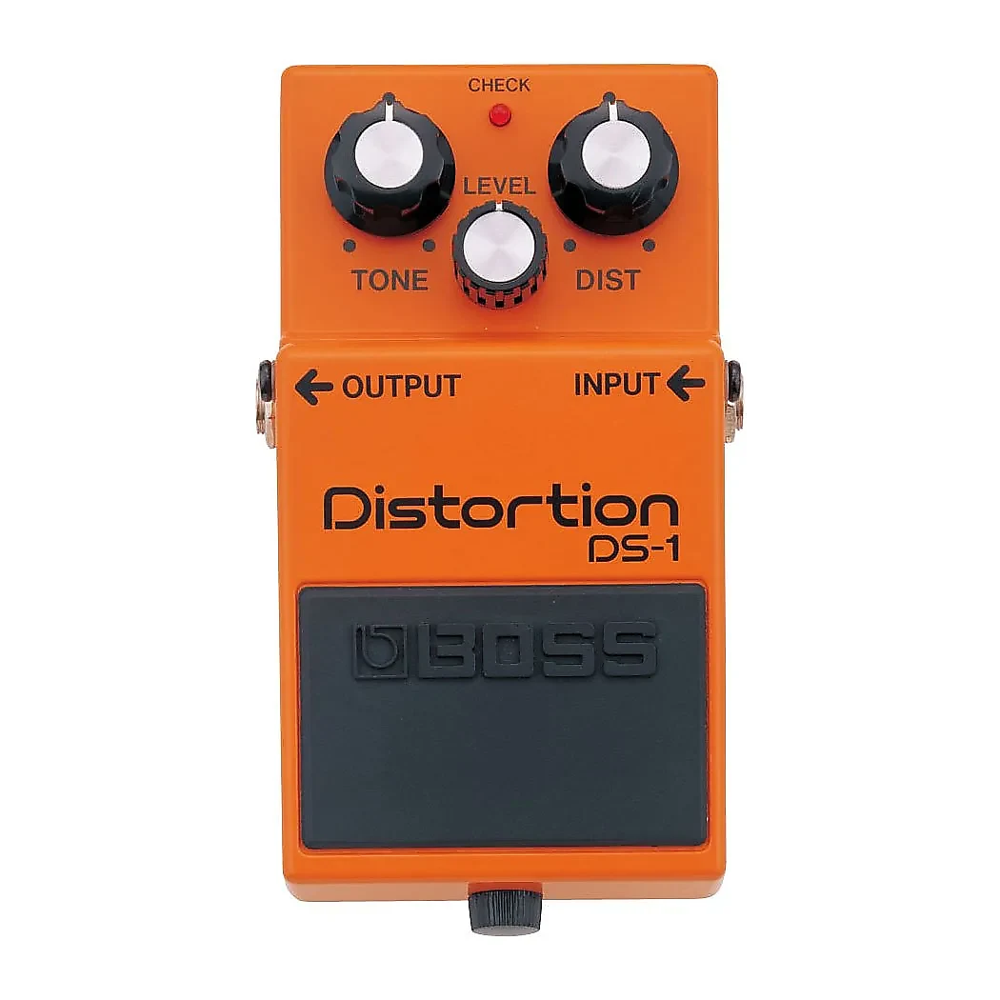
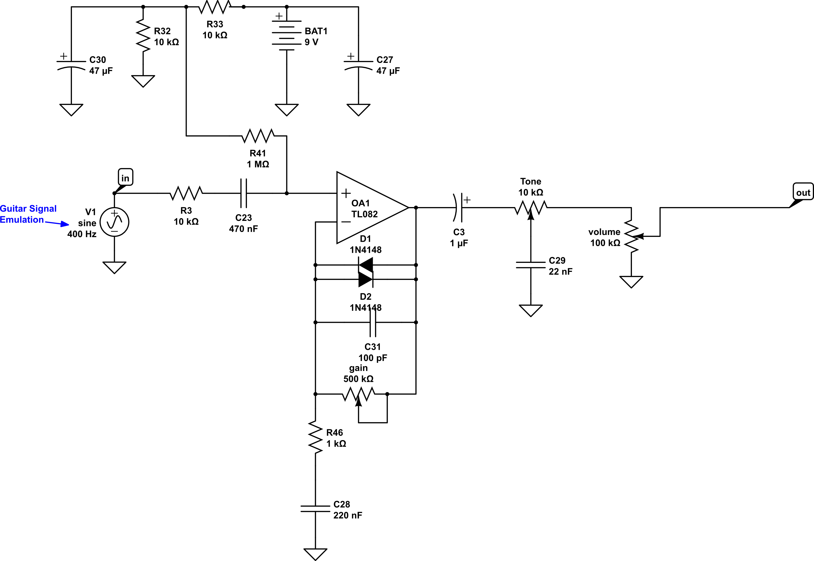
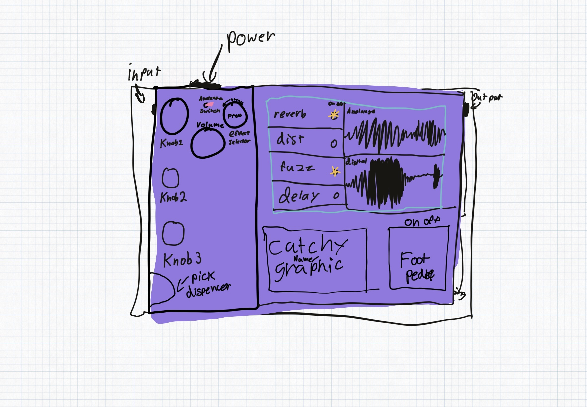

Class 1: Final Project Preposal
Guitar Pedal:

A guitar pedal is something that takes the input of a guitar and augments the electrical signal to create different effects.
This guitar pedal creates a distortion noise which is done by using a circuit that looks something like this.
Guitar Circuit:
Concept:
My final project will be to make a digital vs. analog pedal. In the music world, there is a stigma that digital effects are always worse than analog ones. I don’t think this is true. This pedal would have digital and analog effects built into it and a switch to change between the two. This would allow me to test whether digital or analog is “better”. Here is a concept sketch of what it could look like: 